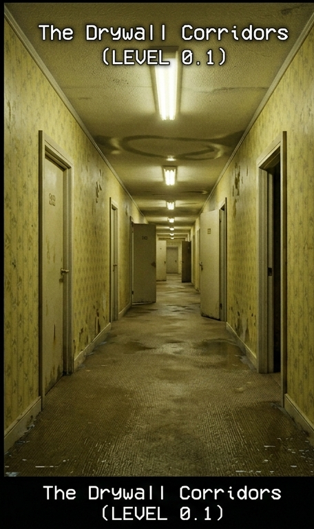
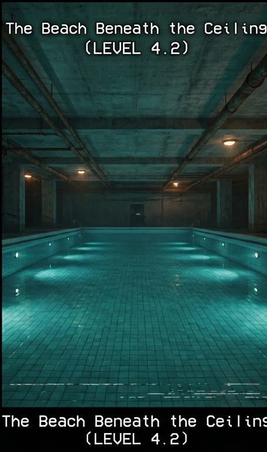
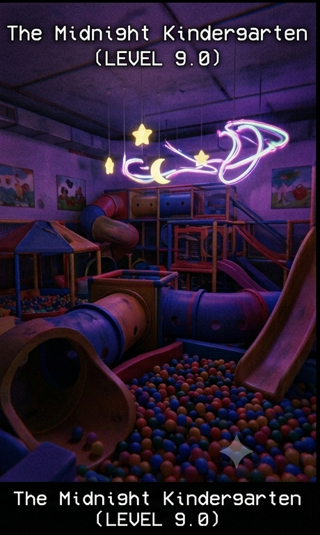

Arhiva Cartografică a Spațiilor Visate
Schițe și diagrame recuperate din conștiința colectビア. Aceste locații își schimbă structura dacă nu sunt privite.
Coridoarele de Rigips (The Suburbs)
Descriere: O rețea infinită de coridoare cu tapet galben-șters, luminate de neoane care bânâie constant.
Anomalie spațială: Dacă mergi în linie dreaptă timp de 10 minute, te vei întoarce în același punct.

Plaja de sub Tavan (The Indoor Ocean)
Descriere: O piscină uriașă, acoperită, care pare să nu aibă margini. Apa este perfect caldă și limpede.
Anomalie spațială: Nu există ecou, deși spațiul este gigantic. Sunetele dispar repede.

Grădinița de la Miezul Nopții
Descriere: Un loc de joacă interior pentru copii, plin de tunele din plastic colorat și bazine cu bile, sub o lumină violet.
Anomalie spațială: Structura tunelelor se reconfigurează la fiecare sunet de ceas cu cuc.
